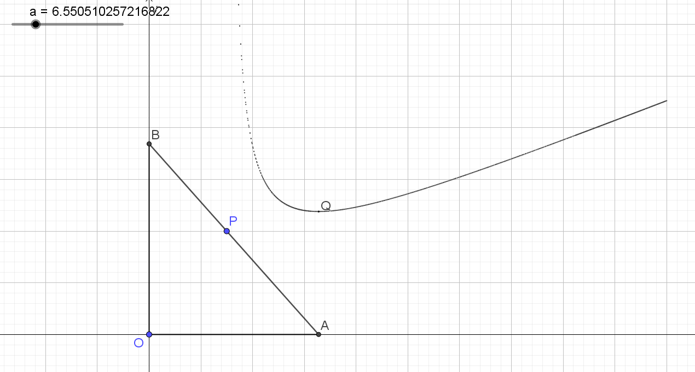

前言
这篇文章最初写于 2022 年 11 月 19 日。2023 年 9 月 24 日初次改写为博文。
过程不太严谨，但一定程度上反映了我的思考。只进行了部分格式修正以适应博文格式，未进行内容的修改。
又是一年高三，感慨万分呀。。。
问题
如图，已知直线 l:ax+by=1(a,b>0) 过定点 P(m,n) ，其中 m,n>0 ，交 x 轴于 A(a,0) ，交 y 轴于 B(0,b) 。求下列值的最小值：
- AB
- C△OAB

引子
去年 9 月 24 日进行了这个研究，当时已经完成全部目标，但或用了不会证的不等式，或化简结果不太成功。而如今恰逢复习到解析几何直线，重新写了一遍。
旧文
第一份
注意到
a2+b2=(a2+b2)(am+bn)(am+bn)⩾(m32+n32)3
当 ba=3nm 时取得等号
此时 {a=m+3mn2b=n+3m2n
即 ABmin=(a2+b2)min=(m32+n32)23
运用了「卡尔松不等式」，然而我不会证明。
第二份
设 t=ba ，由题意知 b=n+tm
注意到
C(t)=a+b+a2+b2=b(ba+1+b2a2+1)=(n+tm)(t+1+t2+1)
则
C′(t)=t2+1nt+n−t2m−t2t2+1m=t2t2+11(nt3+nt2t2+1−m−mt2+1)
令 C′(t)=0 ，则 nt3+nt2t2+1−m−mt2+1=0
整理得 nt2(t2+1+t)=m(t2+1+1)
设 t=tanθ(θ∈(0,2π))
则
原式⇔ntan2θ(tanθ+secθ)=m(secθ+1)⇔cos3θnsin3θ+cos3θnsin2θ=cosθm+m⇔nsin2θ(sinθ+1)=mcos2θ(cosθ+1)⇔nm=tan2θcosθ+1sinθ+1⇔nm=tan2θ2cos2φ2sinφcosφ+sin2φ+cos2φ⇔nm=tan2θ22tanφ+tan2φ+1⇔n2m=tanθ(tanφ+1)⇔a=t2+1+t−1⇔t=2a+2a2+2a⇔t=n+2mnm+2mn
易见原式有最小值
则当 ba=n+2mnm+2mn 时取得最小值
此时 ⎩⎨⎧a=n+2mn2mn(m+n+2mn)b=m+2mn2mn(m+n+2mn)
重新代回去很难算，我就用软件算了，结果长下面这样，复杂无比，但软件说是最简的：
(C△OAB)min=(2mn+m+n)(2mn+2m2m+2mn+2n2n+2mn[(2mn+m)21+(2mn+n)21])
把 {m=1n=1 代入得 Cmin=4+22 ，是正确的。
把 {m=3n=4 代入得 Cmin=14+46≈23.7979589711327
此时 a=9−6≈6.550510257216822

不是很明显，但我有理由相信它是在最低点。
就这样，Over
2021-10-07 更新：
经过尝试，将原式化简为
(C△OAB)min=2(m+n+2mn)
则当 ba=n+2mnm+2mn 时取得最小值
此时 ⎩⎨⎧a=n+2mn2mn(m+n+2mn)b=m+2mn2mn(m+n+2mn)
没能手动化简出结果。
重制
设 t=ba∈(0,+∞)，则 b=tm+n
第一份
AB2=L(t)=b2(t2+1)=n2t2+2mnt+m2+n2+t2mn+t2m2
L′(t)=2n2t+2mn−t22mn−t32m2=2(nt+m)(n−t3m)
则 L′(t) 在 (0,3nm) 单调递减，在 (3nm,+∞) 单调递增，Lmin(t)=L(3nm)=(m32+n32)3
即 ABmin=Lmin(t)=(m32+n32)23
第二份
C△AOB=C(t)=a+b+a2+b2=b(t+1+t2+1)=(tm+n)(t+1+t2+1)
C′(t)=−t2m(t+1+t2+1)+(tm+n)(1+t2+1t)=(t2+11−t2t2+1+1)m+(1+t2+1t)n
再记 tanθ=t,θ∈(0,2π)
则 C′(θ)=cosθ−1cos2θm+(1+sinθ)n，易见 C′(θ) 单调递增。
令 C′(φ)=0
1−cosφcos2φm=(1+sinφ)n⟺1−cosφ1−sinφ=mn⟺2sin22φsin22φ+cos22φ−2sin2φcos2φ=mn⟺cot2φ=m2n+1⟺t=tanφ=1−tan22φ2tan2φ=n+2mnm+2mn
从而 C(θ) 在 φ 处取得最小值。
则 b=tm+n=m+2mn2mn(m+n+2mn)
则
Cmin(t)=b(t+1+t2+1)=b(n+2mnm+n+22mn+m2+2mn+2m2mn+n2+2mn+2n2mn)=bn+2mnm+n+22mn+(m+n)2+2(m+n)2mn+2mn=(m+2mn2mn(m+n+2mn))(n+2mn2(m+n)+32mn)=(m+n)2mn+3mn2mn(m+n+2mn)(2(m+n)+32mn)=2mn(2(m+n)+32mn)2mn(m+n+2mn)(2(m+n)+32mn)=2(m+n+2mn)
后记
无关本篇内容
前几天泥岗那边进行了无人机表演庆祝深中 75 岁生日。
表演前几天在晒布就能看到大楼在滚为深中庆生的条幕，我还蛮不屑的。毕竟有这么多钱，不如把晒布和西校设备翻修一下：起码让西校厕所别冒臭气；起码让西校在阴天也有稳定的热水；起码让西校洗澡时水温不会毫无征兆地突然加大把皮肉烫红；起码让我们班防火铃不会无故响一节课（最近好像没有了）；起码让投影不会频闪「环境温度异常」（最近没有）；起码让各班设备统一（在串班后我才发现原来有的班级用的是可触屏、高科技的设备，我们班还在用油性笔、投影的设备）……
然后前几天晚自习看了表演直播，虽然嘴上说不如弹幕有意思，但带给我的仍然是震撼。倒也不去想破不破费的问题了，炫就完了！
在其中我觉得 75 周年那个标志设计得很漂亮，至于无人机表演也是真的帅！
羡慕学弟学妹们，深中福利真是越来越好了。
最后祝母校深圳中学 75 岁生日快乐！早日实现建设中国特色世界一流高中的目标！